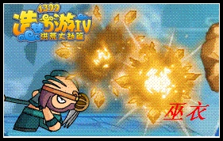
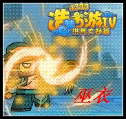
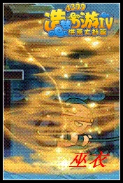
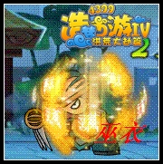
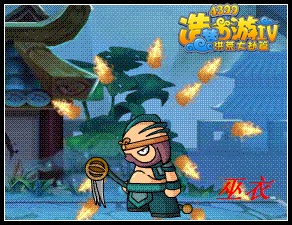

普通攻击
八戒的普攻特别慢，可能一些玩家不耐烦，多少还是一招连一招的，只是容易被打断而已，特别是远程的。
第1招：用双手用锤攻击前方，打断怪物攻击，因为距离的关系，容易被高速度和背后的怪物打断，所以最好还是卡墙角。跳跃的第一招，因为范围大所以可以打断怪物攻击，几率是比较大的，但是后来容易被连击。奔跑的第一招特别适合推怪，是第一招中最不容易被打断的，是推怪数量最大的。
第2招：容易打断怪物再次攻击，不是特别重要，但是速度不错。
第3招：将武器拉倒后方，不会把怪物拉倒后方，但是可以攻击到后方的怪物，几率不是特别大，原因是有怪物早就攻击了。
第4招：将武器拉回来，攻击怪物。(期间要是有远程怪物容易被攻击到)攻击过程中间是霸体哦。
角色分类
八戒是厚血高攻型。
优点：防御高，血厚，攻击较高，战争怒吼。防御高和血后这两个优点，让八戒在造梦2到4之间，有着千年土盾的称号，一般来说肉盾攻击是不高的，可是我们八戒攻击老高老高的。而且还有战争怒吼(虽然被吸过来的怪物还可以攻击不过还是特别方便的)。
缺点：攻击慢，没有走位技能，灵活性低，魔少，攻击慢是八戒的一大死点，原本造梦3已经很慢了现在更慢了，而且被吸过来的怪物容易打断技能。灵活性也比较差。
推荐，比较会操控的新手和装逼爱好者，新手是因为高防御，高血量。装逼爱好者是因为战争怒吼。
总体解析
血高，攻击也不错，可是魔少。但是没关系，因为前期boss的灵活性基本是后期的25%到30%左右。所以只要有耐心基本打BOSS不是问题。只要注意躲开攻击，把握时间攻boss。前期来说就是一个字：耗，根本没有技能好坏的问题。中期魔超过了boss的属性成长，攻击基本可以跟上boss的属性成长，防御还是最强的，不过boss的灵活度有了飞的成长，八戒又没真正的有走位技能，沙尘暴和战争怒吼勉强支撑着八戒的灵活度，想要获胜就给有一定的操作技巧和打boss的方法魔抗防御后期勉强跟上了boss的属性进度，防御没有低boss的攻击属性太多，伤害基本有boss防御的18/1，这个时候中期锻炼出的操作技巧在加深一些技巧和，boss的打法窍门。然后基本可以跟上boss灵活度。只要注意躲开攻击和boss的大招基本马上。对了还要熟练有2段太，熟练运用2段跳对后期玩家应该不是问题。
技能解析
1、巨石破
拳头敲打地面，出现3个妖石然后爆炸攻击前方，带有较小的击退性。攻击速度对八戒现在的技能来说是快的，攻击力威大，耗魔低，只要怪物不离开攻击范围内，就可以一直攻击。建议用这招清小怪，真的特别管用，攻击速度比普通攻击快。可以减少时间和危险性。性比价高，实用度很高。建议满级。

2、战争怒吼
八戒弯腰展开双手形成吸力，形成龙卷风将怪物吸过来，这个技能会被怪物打段。注意这个技能和以前不一样了，怪物被吸过来时是会进行攻击技能，吸过来的速度（这个和造梦3不一样造梦3会控制速度，这个不会速度是一样的）会造成一系列的差距，所以建议大家先跳到天空再使用技能这样可以尽量减少技能小怪消失后对角色的生命值伤害。性比价较高，实用度中等。建议一级，它每一级都回增加一点点的攻击了，使用了在一定时间也会增加。欢迎装逼达人使用。

3、沙尘暴
举起耙子，用土趴旋转360度一周（不同重复到技能消失后)攻击速度中等，攻击威力中等，是霸体的技能(技能使用中，怪物攻击不会被击退，但是会遭到攻击伤害)可以用来聚怪，效果没有怒吼好(跟怒吼比受到的伤害可能会更多些，具体的看距离，距离远建议用怒吼距离近建议沙尘暴）耗魔较中等，性比价中等，实用度中等，建议满级，因为这个打boss不是经常使用，一般用于聚怪和清怪（这个技能最好向墙角使用，尽量的卡怪，技能和悟空的火焰闪一样无法中断）。建议和战争怒吼打牌，因为出手快，连击高，又是霸体。

4、土盾牌
高举耙子，召唤盾牌，不停在身边旋转，维持10秒(升级不加维持时间。我白白升级了，感觉世界欺骗了我)每一秒会一定的血。注意这个10秒不是霸体，还是会被攻击到的伤害也不会减少)性比价高，实用度高，建议1级或则4到6级，为什么这样说呢，听我好好说一说。好处一，升级会比不升级多回血，打个比方：1级盾牌回24滴。2级盾牌回50滴。中间多少加了2滴。再打个魔的比方：1级10点魔，2级17点魔这样比2次使用1级盾牌划算。好处二，还是打个比方：一个boss攻击你，你快没命了，情况一土盾牌是2级的可是现在的魔只有一点点，你活活被打死了。情况二用了一次盾牌顶住了boss的一次攻击，顺利离开了boss的攻击区，升与不升都有好坏。你是要灵活性呢还是要高回血呢，这个给看大家自己的决定（还有这个技能可以重叠使用哦）他是霸体哦，要好好使用。

5、土魔刺
起耙子以耙子为中心旋转一周，后敲打地面，变成一个土球带尖刺的，维持一定时间，在这个时间内会反弹1.8到2倍的伤害，因为有些怪物比较特殊，所以是1.8到2倍。土刺会自动找目标，在水上可能只有一部分尖刺攻击得到boss。注意：建议不用这个技能攻击祖巫，因为一般尖刺会打腰部这样无法造成伤害，没有蓄力时间。打敏捷型的boss最好不要用该技能，不然会死的比较惨。造梦3的土刺都有集中多，意思就是只要在前面的第一个尖刺攻击到怪物其他差不多也会攻击到，洪荒大劫篇尖刺是集中点的较小，前面打到后面的尖刺100/50打不到boss。性比价很高，实用度较高，建议满级因为伤害的问题，这个技能只能算半主技能使用，因为技能灵活度不是很高。
